Ticket submitted by sandmanfan (Discord) · 2026-06-12 · levels 1, 1b, 1c, 1e · fixes authored autonomously by Claude (Fable 5) via Claude Code · live demo: exentt.com/jn-engine · previous tickets: #1 · #2
Third community ticket, and the first to range beyond Retroville — into Jimmy's lab
(level1b), the school (level1c), and the Yokian ship (level1e). Fourteen reports, ten root
causes. The headline find is an engine-wide unit bug: the .gam loader stored authored
rotations in degrees into fields every consumer reads as radians — so a door authored at
270° rendered at ≈350°, a fan authored at 90° sat diagonally in its duct, and even Jimmy's
spawn-facing direction had been silently wrong on every level since the entity system landed.
One conversion at the load boundary fixed all three orientation reports plus unreported damage
everywhere. Honorable mention: the "hidden" canvas — the four invisibility reports turned out to
be authored data the engine simply hadn't learned to read yet.
| # | level | entity / placement | class / tag | cat. | report |
|---|---|---|---|---|---|
| 1 | level1 | BLOCK_Rocket03 | placement | TEX | fins should be blue |
| 2 | level1 | 3ARR | C3DARROW | TEX | transparent arrow should be in place of the C3DARROW entities |
| 3 | level1 | 3PHO | C3DPHONEBOOTH | MIS | model walkie talkie, should be the phonebooth in phone.omt |
| 4 | level1 | 3PIC | hydrant | GFX | generally 3pic models for nest, boat, hydrant should be invisible |
| 5 | level1 | 3LEA | C3DLEAVES | TEX | soda sprite should be leaves |
| 6 | level1 | tree07 | placement | SCL | tree sprite is too small |
| 7 | level1 | treebranch04 | placement | SCL | tree sprite is too small |
| 8 | level1c | 3TOL | C3DTOOLCHEST | ORI | incorrect rotation |
| 9 | level1c | 3SCD | C3DSCHOOLDOOR | MIS | wrong door model and texture |
| 10 | level1b | 3FAN | labfan | ORI | fan is not aligned properly in it's dedicated space |
| 11 | level1b | 3PIC | C3DPICKUPITEM | PLC | fishbowls are floating |
| 12 | level1b | 3PIC | shrinkray | PLC | jet pack is slightly off-center to the entryway |
| 13 | level1e | 3DOR | yokdoor | ORI | generally rotation on yokdoors are incorrect |
| 14 | level1e | 3CIN | C3DCINDY | MIS | wrong cindy model |
MIS = wrong/missing model · TEX = wrong/missing texture · GFX = rendering artifact · ORI = wrong orientation · PLC = wrong placement · SCL = wrong scale. Items 8, 10, 13 share one root cause (rotation units); so do 11 + 12 (billboard anchoring) and 6 + 7 (mis-clustered capture sizes).
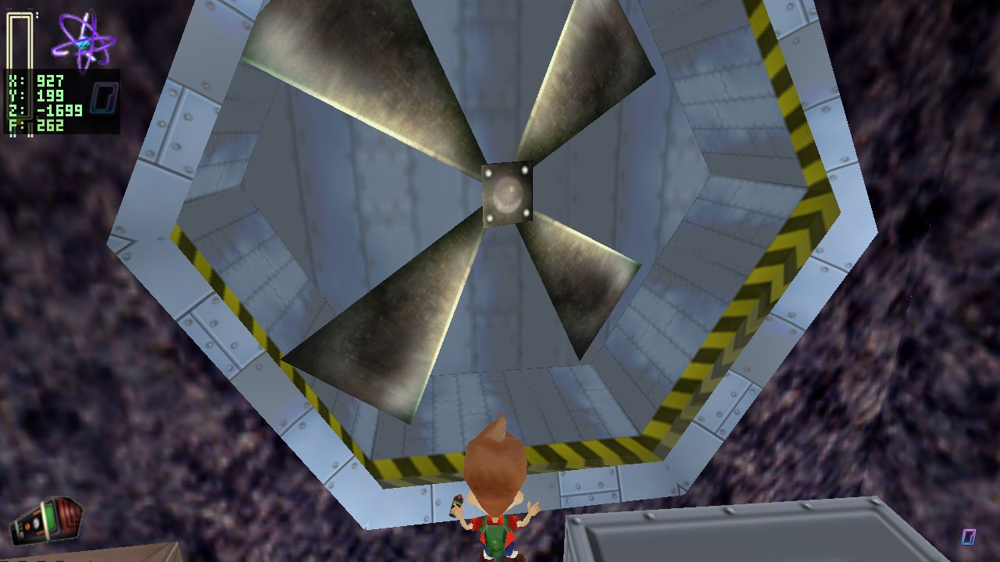
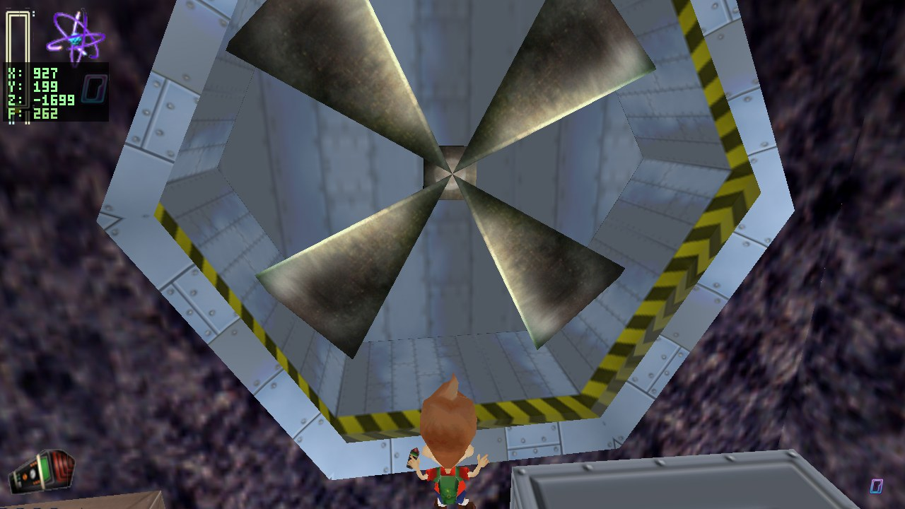
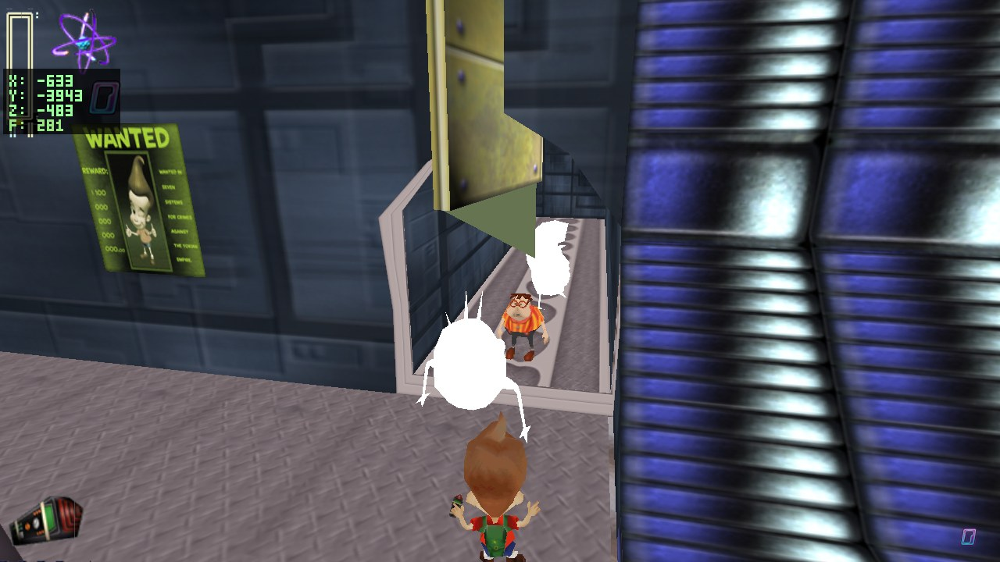
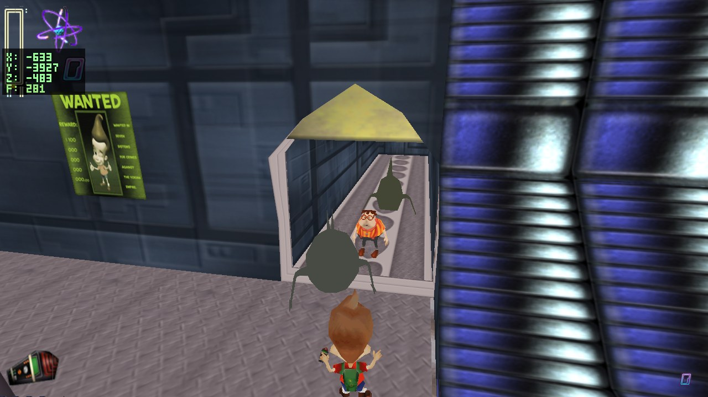
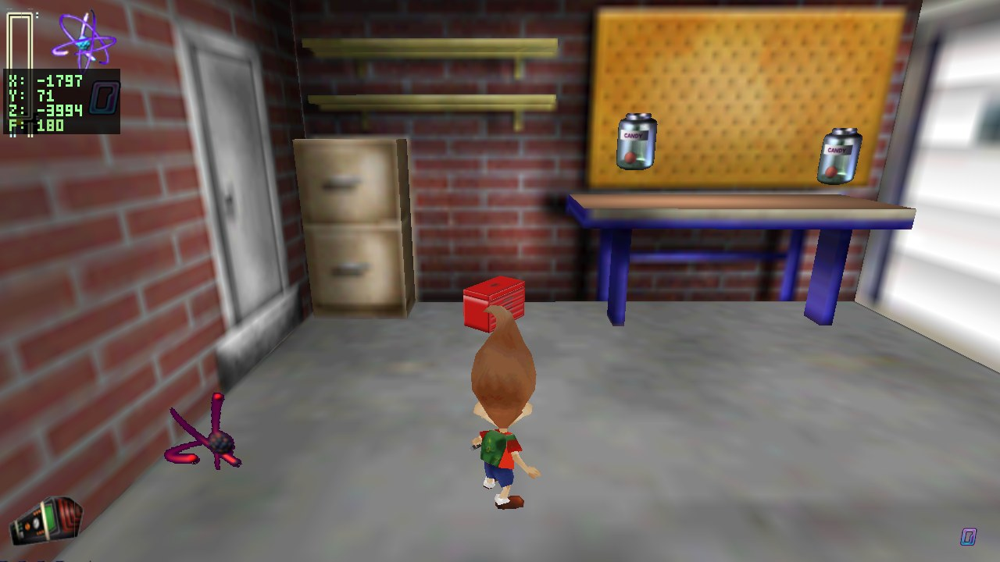
The .gam data authors rotations in degrees — across all 35 levels the values are
clean editor angles (0, 90, 170, 180, 220, 270). But gam_loader.c stored them raw into
e->rx/ry/rz, which the player heading (sinf(e->ry)), the draw paths, and the camera all
consume as radians. So 90° became 90 rad ≡ 116.6°, 270° became ≡ 350.1°, and 180° became ≡ 167.3° —
close enough to "right" in some places that it survived three QA passes. A second, subtler half:
the engine mirrors the original's left-handed Z at the load boundary (z = −z), and a mirror
flips rotation handedness too — M·Ry(θ)·M = Ry(−θ) — so the converted yaw must also negate.
gam_loader.c — rx, ry = −deg·π/180, rz = +deg·π/180
(Z-axis rotations don't mix the mirrored axis). Removed behavior_fan.c's local degrees compensation.
Every authored rotation in both games now lands correctly, including Jimmy's authored 220° spawn facing (see "collateral repairs" below).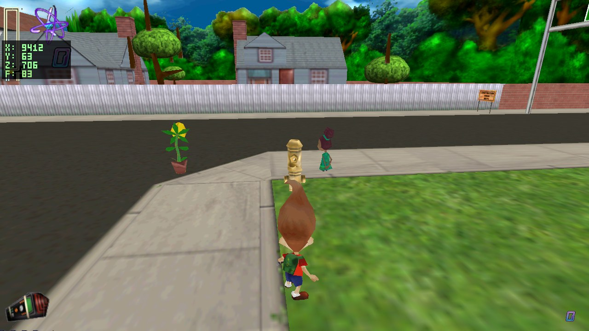
Dumping the .gam instances settled it: every flagged pickup authors
SpriteDatabase=sprites.omt, SpriteIndex=106 — and chunk 106 in sprites.omt is a canvas
literally named "hidden" (the editor's ?-placeholder, below). These are invisible trigger
volumes sitting on top of their visible referent — the hydrant mesh is level geometry, the level2
rescue cat is the separate 3KIT entity. The engine had been "helpfully" binding referent meshes
per tag (drawing a second, untextured hydrant). The same dump showed pad/pad2 author 106 too
(rows removed), while godphone authors chunk 184 — a real phone sprite — so it now renders as
the original does.
Level1.gam 3PIC nest1 sprites.omt idx=106 ("hidden")
Level1.gam 3PIC nest2 sprites.omt idx=106 ("hidden")
Level1.gam 3PIC boatl sprites.omt idx=106 ("hidden")
Level1.gam 3PIC hydrant sprites.omt idx=106 ("hidden")
Level1.gam 3PIC pad sprites.omt idx=106 ("hidden")
Level1.gam 3PIC godphone sprites.omt idx=184 ("phone" — a real sprite)
sprite_ref_hidden() rule — any JNBG entity authoring sprites.omt chunk 106 draws
nothing. Deleted ten per-tag referent-mesh rows (nest×5, hydrant, boatl, pad×2, godphone, kitty) that were
overriding the authored data. Data-driven, so it covers every level, not just the reported ones.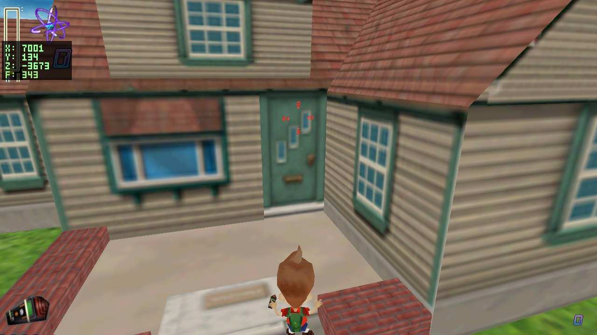
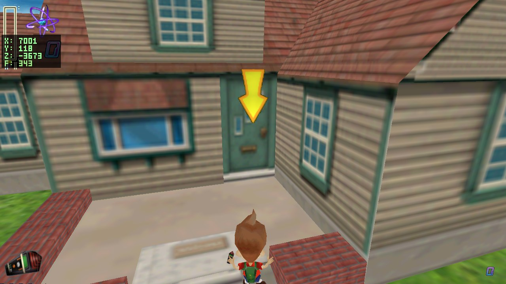
The decomp settles the class's nature: C3DArrow's base chain is
C3DSpriteType → C3DSprite — it's a billboard sprite, not a mesh class. All eight
instances author sprites.omt chunk 33, which is the canvas named "arrow" (size 200). The
engine's per-FourCC table bound 3Darrow.ASE — a leftover from before the sprite tier existed —
which shadowed the authored sprite reference.
3ARR → 3Darrow.ASE row; the resolver now falls through to the
sprite-database tier and draws the authored chunk-33 billboard at the authored 200-unit size.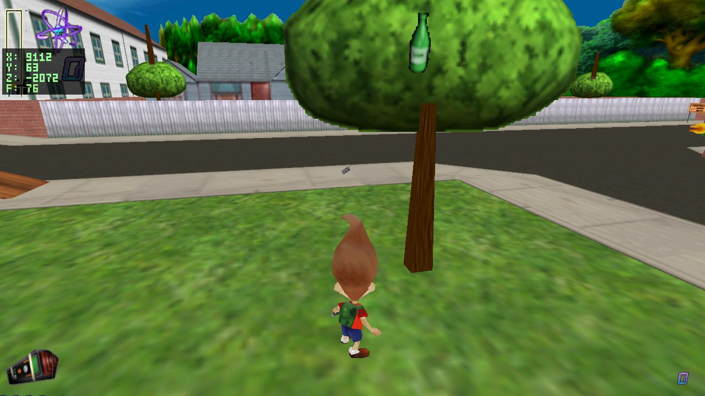
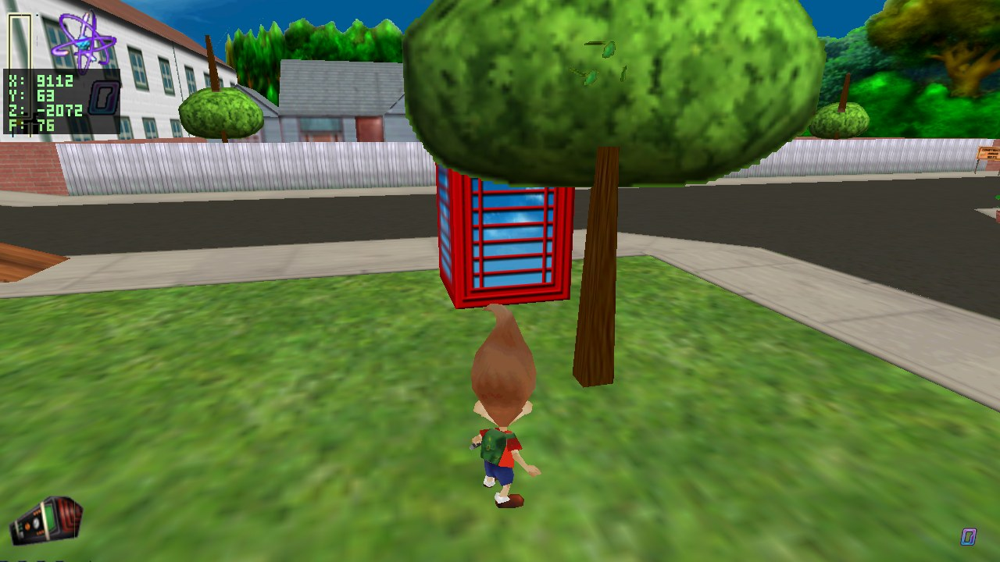
The reporter named the exact container, and the decompiled C3DPhoneBooth::InitObject
agrees verbatim: it resolves "phone.omt" and binds shape 0 from it. phone.omt holds one
3DSh chunk — id 0, named "phone" (the booth, 482 units tall) — plus canvases Phone2 / phone /
PhoneFloor. phone.ASE, what the engine had been drawing, is the handheld walkie-talkie prop.
// C3DPhoneBooth::vfunc_01_007 (InitObject), Ghidra @ 00435780 puVar1 = FUN_0046a910(s_phone_omt_004f0314); // resolve "phone.omt" uVar2 = FUN_00477ba0(this[0x12a].vftable, 0); // bind shape id 0 = the booth
omt-gltf →
assets/glb/omt/phone/phone.glb (canvas textures embedded) and pointed the 3PHO row at it.
The second booth instance authors RotationY=180°, which now also renders correctly thanks to the rotation fix.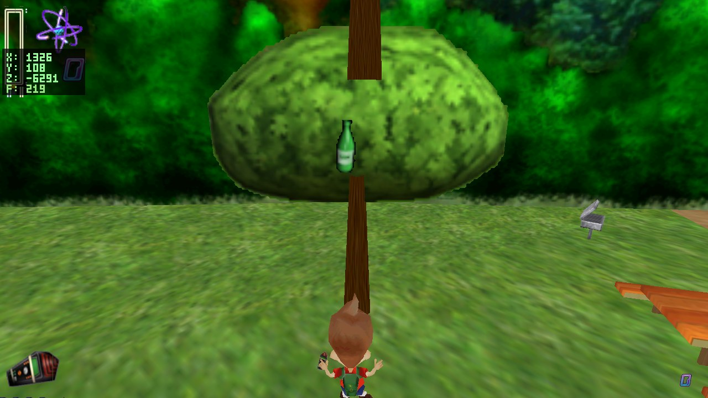
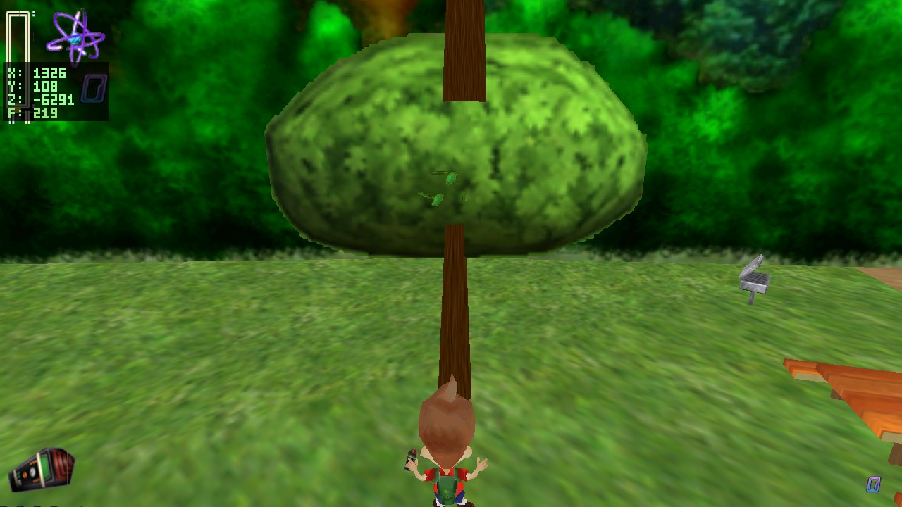
A fun one: the "soda" is real. The instances author SpriteDatabase=icons.omt, SpriteIndex=4 —
but icons.omt is the level editor's 12-icon set (trigger, dispatch, load, question…), and
chunk 4 is the generic "sprite" placeholder icon, which happens to be drawn as a little green
bottle. The original class swaps in its real visual at runtime; the engine was faithfully rendering
the editor's stand-in. The actual leaves canvas lives in sprites.omt as chunk 45, "leave0000".
3LEA row binding the chunk-45 leaves canvas at the authored
100-unit size — mirroring what C3DLeaves does in code at runtime.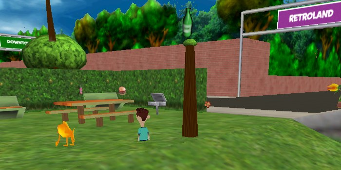
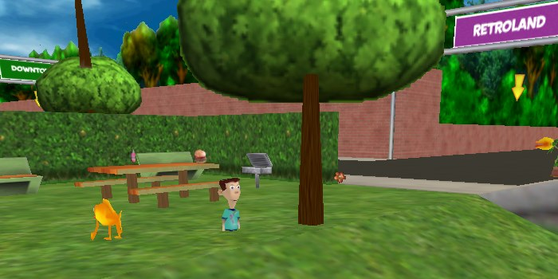
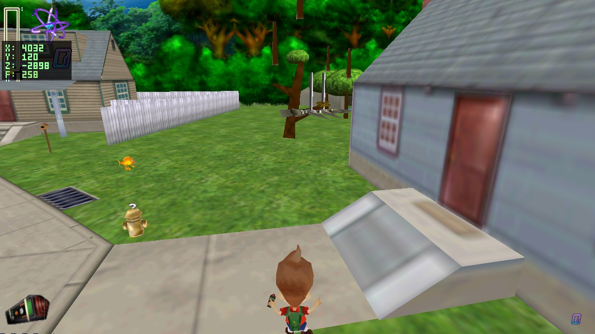
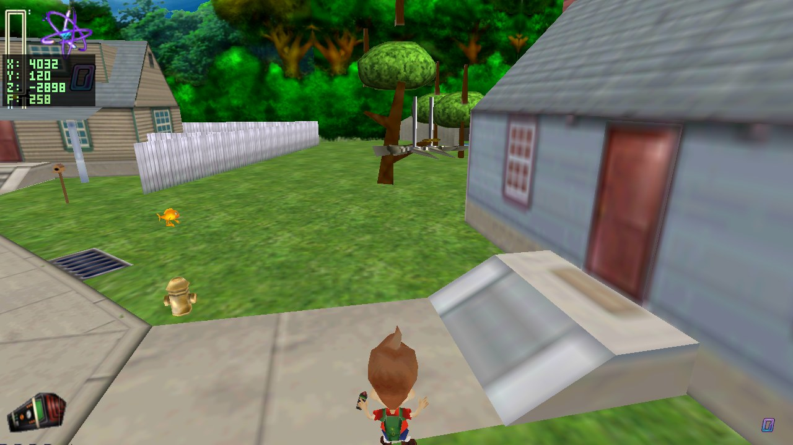
The Phase-5 tree sizes were measured per-tree from captured 4-vertex billboard drawcalls,
matched to placements by position clustering. Re-auditing the table against the source meshes
exposed the two flagged trees as mis-associations: every tree* placement shares the
identical instanced trunk mesh, and the eleven siblings measure 450–700 units — except tree07
at 50, with a one-off 64×64 texture no other tree uses. Same story for treebranch04 (200 vs
its family's 500–600, on a 652-unit-tall trunk). Those two drawcalls had been clustered onto the
wrong quads.
tree01 450 tree06 700 tree07 50 ← tree29 650 tree30 550 tree31/32 600 treebranch02 500 treebranch03 600 treebranch04 200 ← treebranch07 500
level1_billboard_overrides; the renderer's
family-median fallback (600 for trees, 500 for treebranches, family canopy texture) — built for exactly
this case — takes over. Provenance preserved in the override JSON.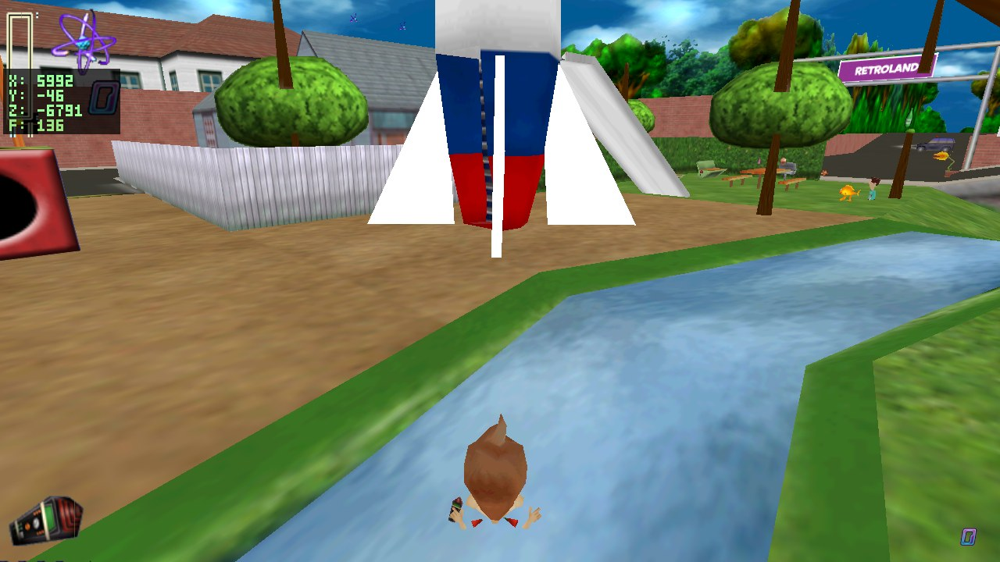
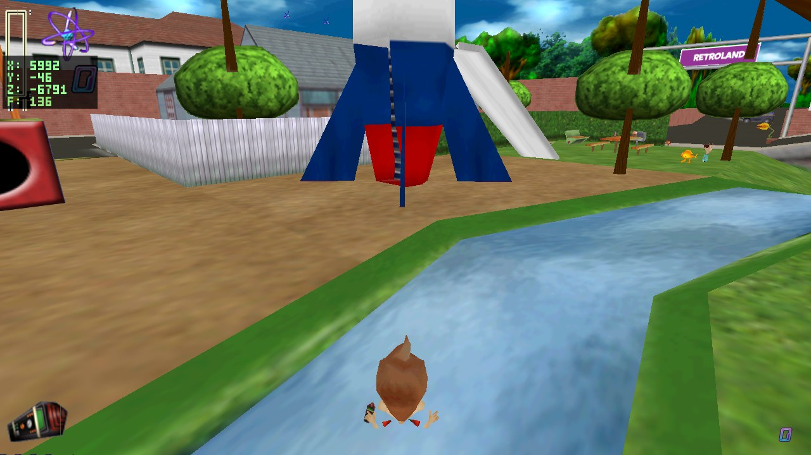
The hardest item of the ticket — because every previous answer (including two from this ticket) was a
texture for a mesh that should never draw. BLOCK_Rocket03 has no material links and
bare full-canvas UVs because it is a collision volume: the original's BLOCK*-prefixed
meshes are invisible blockers, each with a separate visible twin (BLOCKbench ↔ bench05, BLOCKING_road ↔ the
road). Ticket #2 baked it white, this ticket first bound a stale captured tex_id, then a stripe tile — three
guesses painting an object the original never shows, on top of the real rocket. sandmanfan settled it:
"all Block meshes should be invisible" — the visible playground rocket, fins included, is
Rocketa, which was already textured correctly (canvas "Rocket2", the red/white/blue striped
sheet).
BLOCK-prefixed name (case-insensitive — level1c
authors "Blocking01") are never drawn and never QA-pickable; all 19 BLOCK* texture-override rows deleted so no
future export can resurrect one. Lessons recorded: a captured tex_id on a material-less mesh is stale
pipeline state, not evidence — and before fixing how something draws, check whether it should draw at all.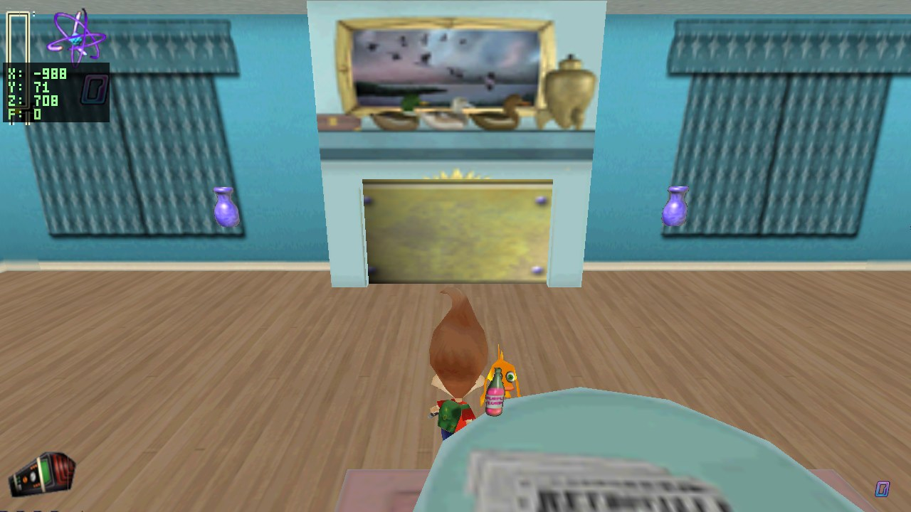
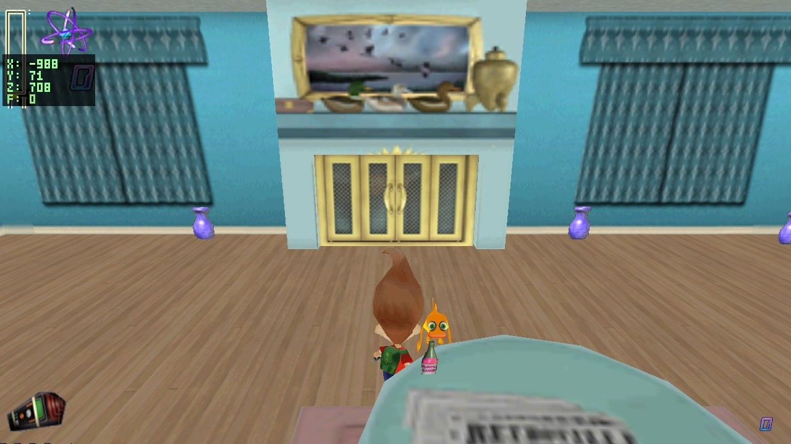
The QA report's own asset field gave it away: firedoor.ase. C3DSchoolDoor authors a
per-instance ASEFile/PNGFile pair exactly like the swing door class the engine already handles —
level1c says firedoor, level3 says doorretro (with exit.png / retrodoor.png variants), level2a says
doorfowl. The engine's one-size-fits-all 3SCD → DOOR.glb row ignored all of it. One wrinkle:
the install's firedoor.ASE is a degenerate 8-vertex export stub, but the textured
glb/ase/firedoor.glb twin already existed from the door-family migration.
assets/glb/ase/<stem>.glb twin when the ASE is a stub. Repair note (sandmanfan,
same day): the first shipped fix drew nothing — the glb twin turned out to embed no textures, and
the engine faithfully hides untextured geometry. The authored PNGFile is the per-instance texture
truth (level3 reuses one doorretro mesh with exit.png vs retrodoor.png), so it now applies to whichever mesh
source loads. This failure class — a visible draw resolving zero textures — is now a standing assertion in the
faithfulness sweep below, checked across every level.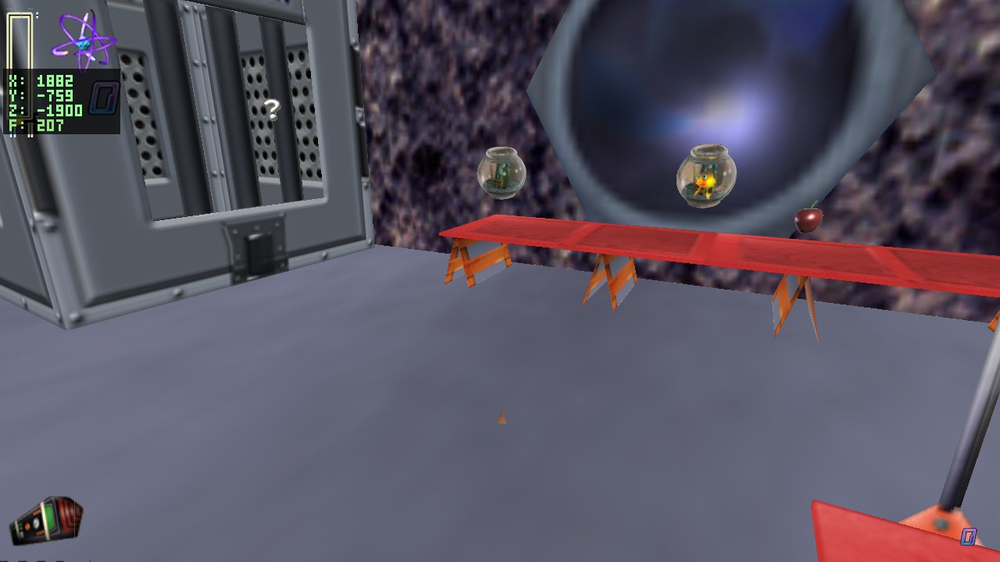
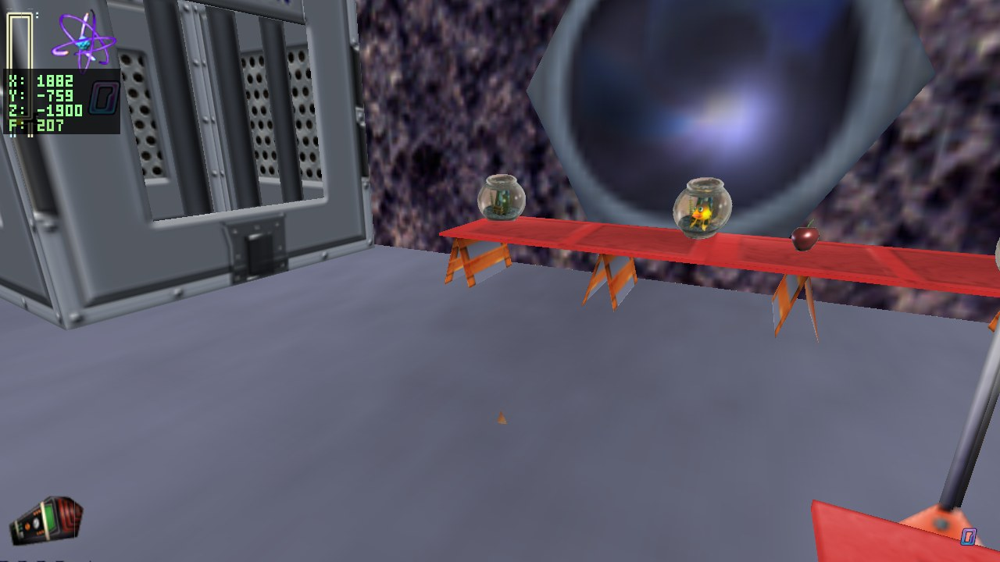
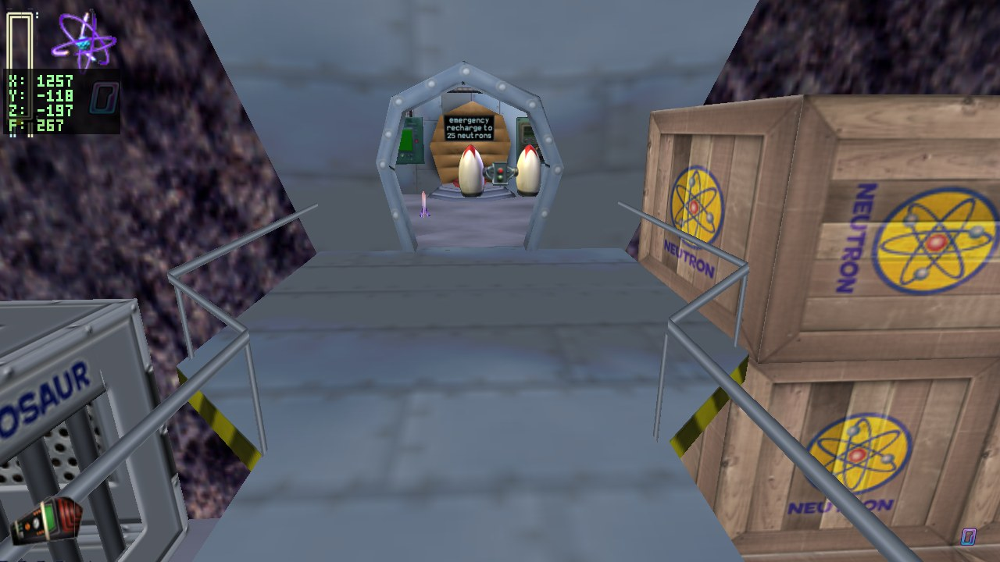
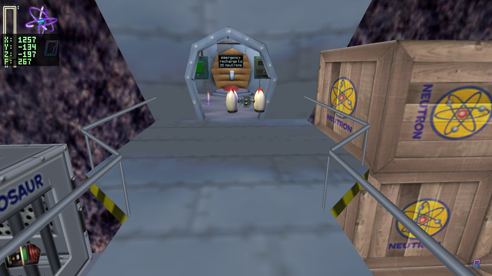
The sprite-pickup draw path "helpfully" lifted every billboard by half its size
(y + size/2) on the assumption that authored pickup positions sit at ground level. The
fishbowls disproved the assumption with numbers: they author Y=−472.8 on a floor at −500 — the
authors placed the center, just like the original's OMediaCanvasElement places its canvas
AT the element position. The lift pushed every sprite pickup (fishbowls +50, jetpack +75) half a
quad too high.
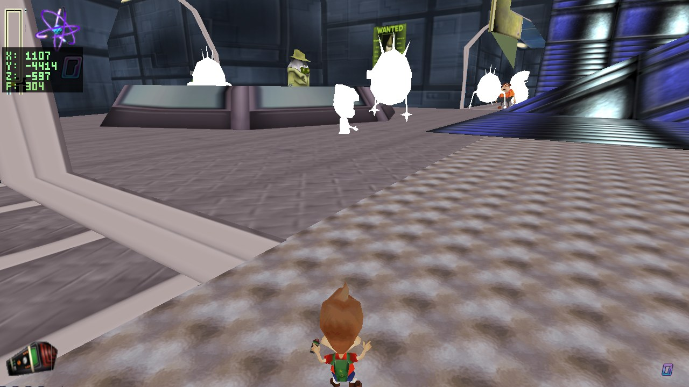
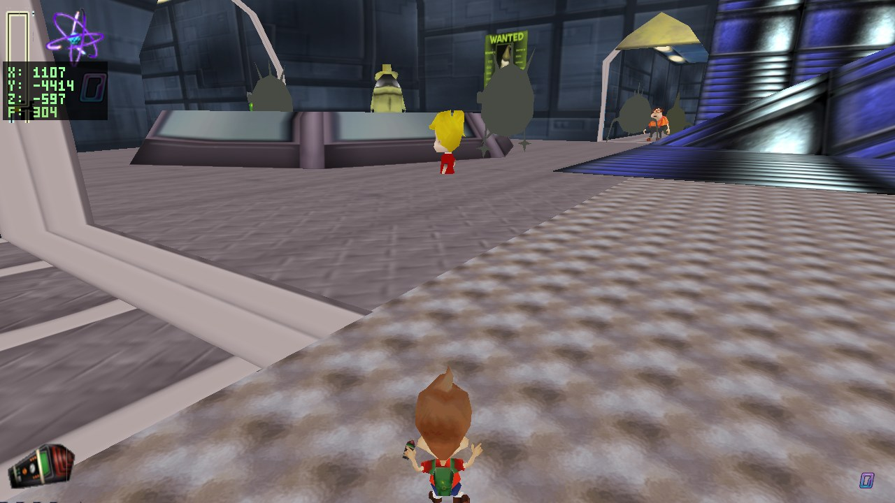
Straight from the decomp: C3DCindy's asset registration loads cindy.png once and
registers HISTOP → cindstop.ase as the default stop/idle animation. cindycheer.ASE is the
cheering anim the class swaps to at the race finish — not the default pose for a captive on the
Yokian ship.
| texture | cindy.png | 00414fa0 | loaded once at registration | | animation | HISTOP -> cindstop.ase | 00414fa0 | default stop/idle |
cindstop.ASE + cindy.png per
docs/decomp/C3DCindy.md.Fixes that fell out of the root causes beyond the 14 reported items:
3JIM RotationY=220°; the engine had
been pointing him at the degrees-as-radians garbage angle since the entity system landed. He now spawns
facing the authored direction (street-side, phonebooth on his left).qa_web_verify.py: all 16 checks pass.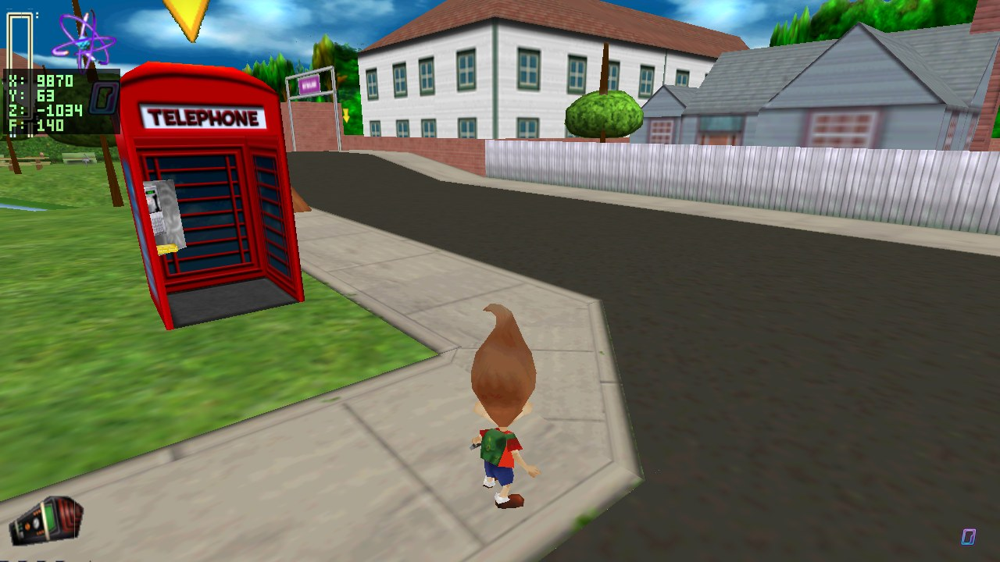
That instinct is correct, and this ticket is the proof: the worst defects above were earlier hand fixes (the arrow's mesh row, the hydrant's referent row, the hardcoded school door, the rocket's painted collision fins). Hand-curated bindings rot; authored data and engine semantics don't. So the per-instance reports aren't the fix mechanism — they're the measurement that exposes which engine rule is wrong, and each rule fix covers every instance in every level at once (this ticket's rotation-unit fix corrected three reported objects and every authored rotation in both games, including the player's spawn facing).
As of this ticket those rules are now executable. JN_AUDIT=1 makes the engine log
every entity/placement draw decision through its real resolution code, and
tools/audit_faithfulness.py sweeps all 30+ levels and asserts the invariants the tickets paid for:
no placeholder boxes, no missing assets, no unresolved sprite refs, no visible draw of a zero-texture
mesh (the fire-door failure class), no degenerate stub bound as an entity visual, no BLOCK collision mesh drawn.
New findings fail the run; accepted ones need a written waiver.
The first full sweep immediately found 28 defects nobody had reported — which collapsed into just three root causes, all fixed the same day:
yoksold.png/yokguard.png in code (decomp-verified).screen.ase + screen1.png.It also caught a bug in this very ticket's own fix within minutes of existing: the BLOCK skip was case-sensitive, and level1c spells its collision meshes "Blocking01". A reporter would have found that next week; the sweep found it on the first run. Each future ticket's root cause becomes a new assertion — QA mines the rules, the sweep enforces them everywhere, forever.
.gam already said plainly: a sprite index, a "hidden" canvas,
an ASEFile, a rotation. The fixes mostly delete code.